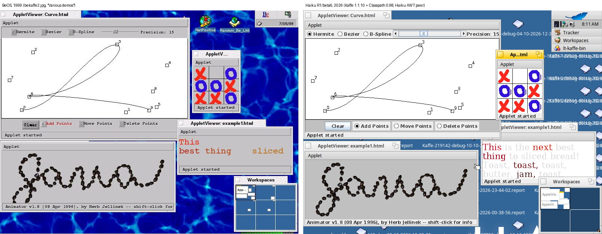
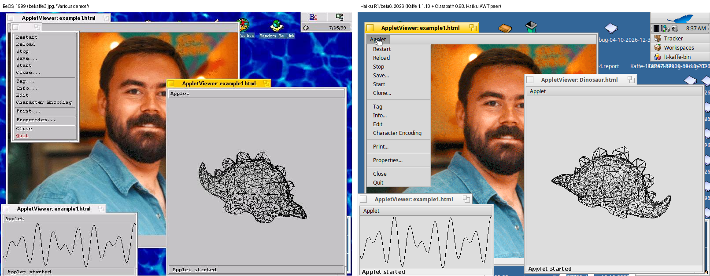
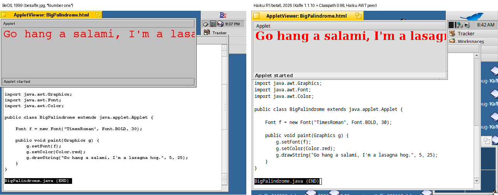

The last BeKaffe news, in August 2000, said that work was focused on a native widgets version with a native look and feel. That version is now complete, for Haiku: Java AWT programs run in Haiku windows with native Haiku menus and panels.
The new AWT peer works with Kaffe 1.1.10 and GNU Classpath 0.98 on Haiku R1/beta6 x86_64:
- Frames and dialogs are native Haiku windows.
- Menu bars, menus, check box menu items and shortcuts are native Haiku menus. Pop-up menus and Choice lists are native Haiku pop-ups.
- FileDialog opens the Haiku file panel.
- Canvas, Panel, Label, Button, Checkbox, radio groups, TextField, Scrollbar, List, ScrollPane and Choice all work.
- Swing works too.
- Old applets that use the JDK 1.0 event model (
action(),handleEvent()) work again.
To celebrate, the old screenshots from bekaffe.sourceforge.net were taken again. The same applets, in the same Kaffe 1.0 AppletViewer, BeOS in 1999 on the left and Haiku in 2026 on the right:

Various demos: Curve, TicTacToe, Blink and Animator.

ImageMap with its menu open, the WireFrame dinosaur and SimpleGraph.

Number one: BigPalindrome.
STILL TO DO: the system clipboard, mouse cursors, audio (applets play no sound yet), file name filters in FileDialog, minimize and zoom, modal window behavior, and integration into the GNU Classpath build. Kaffe runs as an interpreter on x86_64, so drawing is slow.
The sources, the Kaffe and Classpath patches and the build instructions are in the repository. If you are a Java/C++ developer with some experience of the Haiku API and would like to help, please contact us.
This port was guided by one of the original members of the BeKaffe team.